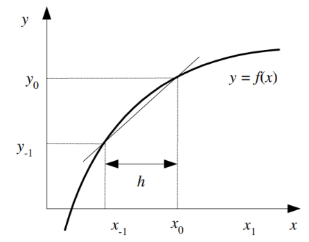

Algoritma
Hampiran Selisih Maju
Hampiran selisih maju mencari turunan yaitu mencari kemiringan garis (gradien) dengan mengambil selisih yang ada di depannya yang ditunjukkan pada gambar di bawah ini1

dimana x0 - x1 dapat diganti dengan h
Rumus Dasar
h -> 0 (h mendekati 0) agar error relatifnya kecil juga, untuk mencari errornya dapat dilakukan dengan menghitung seperti rumus di bawah ini, yaitu melakukan pembagian antara turunan eksak (sebenarnya) dengan turunan maju
Algoritma
Deret Taylor
Menjabarkan turunan sesuai dengan deret taylor, dimana diketahui bahwa rumus dasar dari deret taylor adalah seperti ini
Sehingga untuk mencari hampiran selisih maju dengan deret taylor akan menjadi seperti ini,
Rumus di atas apabila diteruskan akan mendapatkan hasil seperti berikut,
Untuk nilai f di x0 dan x1 menjadi dimana O(h) merupakan orde errornya yang tergantung nilai dari h yang merupakan galat pemotongan dari f sebelumnya. Berikut adalah rumus turunan pertama selisih maju dengan deret taylor
Polinom Interpolasi
Polinom newton-gregory dapat digunakan untuk menyelesaikan permasalahan turunan numerik yang memiliki titik-titik yang berjarak sama sehingga rumus yang dipakai lebih sederhana dibandingkan polinom interpolasi yang lain. Berikut ini adalah polino newton-gregory untuk selisih maju pada turunan pertama
Hampiran Selisih Mundur
Hampiran selisih mundur mencari turunan yaitu mencari kemiringan garis (gradien) dengan mengambil selisih yang ada di belakangnya / bawahnya yang ditunjukkan pada gambar di bawah ini

Rumus Dasar
Algoritma
Deret Taylor
Sama halnya dengan step selisih maju, namun rumus untuk mencari hampiran selisih mundur dengan deret taylor terdapat perubahan yaitu dimulai dari yang terakhir sampai yang awal
Rumus di atas apabila diteruskan akan mendapatkan hasil seperti berikut,
Sehingga rumus untuk turunan pertama selisih mundur dengan deret taylor yaitu, $$ f0' = (\frac{f_0-f_1}{h}) + O(h) $$
Polinom Interpolasi
Polinom newton-gregory dapat digunakan untuk menyelesaikan permasalahan turunan numerik yang memiliki titik-titik yang berjarak sama sehingga rumus yang dipakai lebih sederhana dibandingkan polinom interpolasi yang lain. Berikut ini adalah polino newton-gregory untuk selisih maju untuk titik-titik x0 & x-1 pada turunan pertama
Hampiran Selisih Pusat
Hampiran selisih pusat mencari turunan yaitu mencari kemiringan garis (gradien) dengan mencari gabungan dari selisih maju dan selisih mundur.

Rumus Dasar
Algoritma
Deret Taylor
Perhitungan dengan menggunakan rumus mengurangkan persamaan maju dan mundur, yang dapat dilihat dari rumus di bawah ini
Rumus di atas apabila diteruskan akan mendapatkan hasil seperti berikut,
Sehingga rumus turunan pertama untuk selisih pusat , $$ f0' = (\frac{f_1-f_{-1}}{2h}) + O(h^2) $$
Polinom Interpolasi
Polinom newton-gregory dapat digunakan untuk menyelesaikan permasalahan turunan numerik yang memiliki titik-titik yang berjarak sama sehingga rumus yang dipakai lebih sederhana dibandingkan polinom interpolasi yang lain. Berikut ini adalah polino newton-gregory untuk selisih pusat untuk titik-titik x-1, x0, dan x1 pada turunan pertama